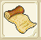
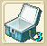
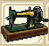
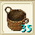
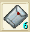
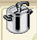

クリスマスの靴下。
1.ファンブルグのゲート(162.146)から、臨時通道を通って亞諾曼城にいく。
2.お婆さん(99.87)から"聖誕襪"を300Gで買う。
3.クリスマスツリー(132.114)を右クリックし、「是」を選択し、
"懸掛的證明"を手に入れる。
4.24時間以上後に、再度クリスマスツリーを右クリックし、靴下を手に入れる。
---報酬---
■パンドレロ図各種（ＡＢＣＤＥ）
■狩猟保存箱（ネギ、卵、醤油、塩、ピーマン、牛乳、小麦粉）
（狩猟物１０マス分を１枠にまとめれるアイテムです）
■紡績の織るもの？
（採取した布の材料を布にできるものっぽいです）
■伐採のカゴ（アップルミント、レモングラス、バルサ、モミ、メランチ）
（伐採物１０マス分を１枠にまとめられるアイテムです）
■現金空袋
（お年玉用の袋みたいで、中に現金詰めれます。手数料かかるぽいです）
|  | パンドレロの設計図です。 全部で５種類あります。 |
|
|  | 狩猟の保存ボックスです（ネギ、卵、醤油、塩、ピーマン、牛乳、小麦粉） 狩猟物１０マス分を１枠にまとめれるアイテムです |
|
| 鉄１０マス分を20本の鉄延べ棒にまとめます。 | ||
|  | 折布機 | 採取した布の材料を布にできるものっぽいです（木綿） |
|  | 伐採のカゴ（アップルミント、レモングラス、バルサ、モミ、メランチ） （伐採物１０マス分を１枠にまとめられるアイテムです） |
|
|  | 現金空袋 | お年玉用の袋みたいで、中に現金詰めれます。手数料かかるぽいです |
|  | 神奇圧力鍋 | 現代や未来と行ったりきたりしなくても、発酵食品が作れるモノらしいです。 |